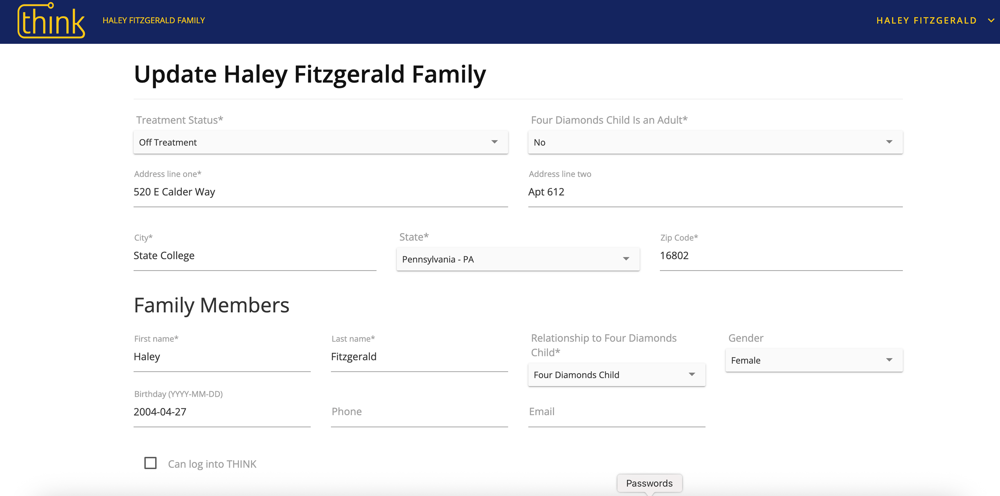
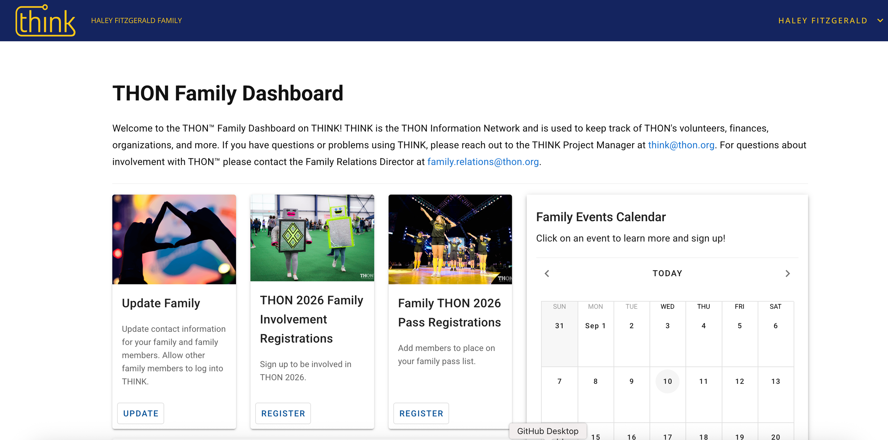

Overview
A portal for families needed to feel less like paperwork.
THON's Family Portal helps new and existing THON families complete onboarding, upload and update family information, and stay informed about upcoming THON events.
The experience was also paired with a weekly email that carried a lot of information at once. Families needed a more concise, approachable place to understand what mattered now, what actions they needed to take, and how to stay connected to their paired organization.
Problem
The old experience made families work too hard to stay in the loop.
Important actions were buried
Updating information, registering for events, and managing THON Weekend details were presented as separate tasks instead of a clear family journey.
The tone felt administrative
The portal handled sensitive family information, but the interface felt more like a database form than a welcoming community touchpoint.
Weekly updates were verbose
Families had to parse long email updates to understand what was coming up, which made it easier to miss relevant events, deadlines, or opportunities to connect.
Research
We grounded the redesign in how Family Relations teams actually support families.
Aiden Coleman and I interviewed Family Relations Chairs from other organizations to understand what information families ask for, where confusion tends to happen, and how paired organizations start building relationships with new families.
Families need a clear next step
Information is most helpful when it is tied to a visible action, deadline, or event.
Connection starts before the first meeting
Optional family interests and hobbies could help paired organizations break the ice with care.
Concise beats comprehensive
The portal needed to summarize the weekly email experience, not recreate its density.
Before and after
From long form to action-oriented dashboard.
The redesign transformed the portal's entry point from a dense data form into a dashboard that gives families an immediate picture of what to do, what's coming up, and how to stay connected.
Before
Families landed on a form, not a home base.

- No orientation — the page opens mid-task on a data entry form, with no context about where families are or what they are there to do.
- Clinical framing — "Treatment Status" and medical fields dominated the visible area, making the portal feel like an admin back-end rather than a family touchpoint.
- No path forward — after updating info, families had no visible view of upcoming events, registrations, or what to do next in the THON journey.
After
A dashboard that tells families what matters right now.

- Action-first layout — three card tiles surface the most important tasks (update family info, register for 2026 involvement, secure THON Weekend passes) at a glance, with clear CTAs on each.
- Community-forward tone — real THON event photography and a welcome message replace bare form fields, connecting families to the THON experience before they click anything.
- Event calendar integrated — families see upcoming dates alongside their tasks, reducing the need to dig through weekly email updates to find scheduling information.
Solution
We redesigned the portal around awareness, action, and connection.
Dashboard-first structure
The new entry point gives families a quick overview of updates, event registration, pass registration, and the family calendar.
Shorter, clearer content
Instead of relying on long weekly messages, the portal breaks information into focused cards with clear labels and obvious actions.
Community-forward touchpoints
Event imagery and registration prompts help the portal feel connected to THON's energy, not just its administrative requirements.
Optional relationship prompts
I proposed optional interests and hobbies fields so paired organizations could start conversations with families in a more personal, natural way.
What this shows
I design for the emotional job behind the task.
The practical job of the Family Portal is onboarding, updates, and registration. The emotional job is helping families feel oriented, remembered, and connected in a large organization with many moving parts.
This redesign reflects how I approach UX: understand the system, listen to the people closest to the workflow, reduce unnecessary effort, and make the interface feel more human without losing clarity.